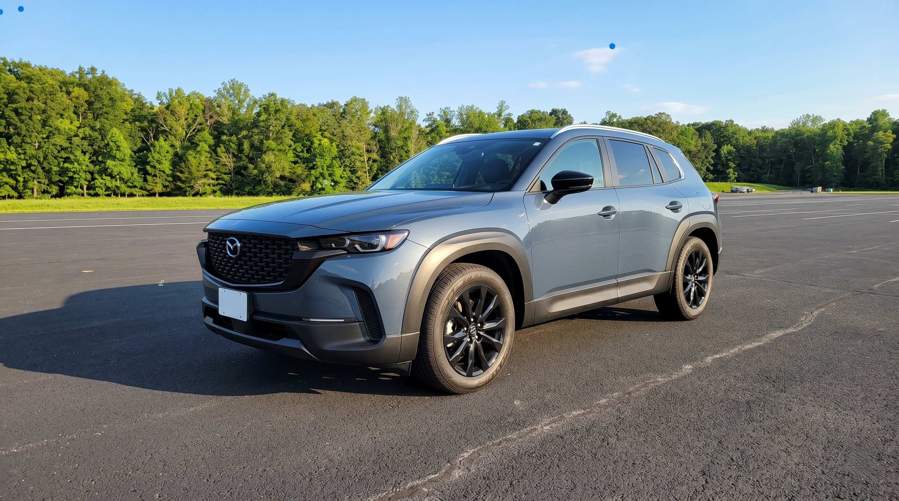

10 Safest Used SUVs for Teen Drivers in 2026 — IIHS & Consumer Reports Picks Under $5K, $10K, $15K & $20K


Motor vehicle crashes remain the leading cause of death for US teenagers — a statistic that hasn't changed significantly in two decades, despite vehicles becoming dramatically safer. The gap between a teenager who survives a crash and one who doesn't is often not the teenager's skill level. It's the crash protection built into the car they were driving. A 16-year-old in a 2023 Mazda CX-5 with a 5-star NHTSA rating and automatic emergency braking is in a fundamentally different safety position than the same teenager in a 2012 sedan with one star.
This guide covers the safest used SUVs for teen drivers at every realistic budget — from under $5,000 to under $20,000 — using IIHS crash test data, Consumer Reports reliability scores, and the joint IIHS/Consumer Reports recommended list published in 2026. Every vehicle on this list has passed the IIHS small overlap frontal test (the most challenging and most predictive of real-world injury outcomes), earns Good or Acceptable ratings in side and rear crash tests, and has standard automatic emergency braking that can detect pedestrians.
Table of Contents
- How IIHS and Consumer Reports Selected These Vehicles
- Safest Used SUVs Under $5,000 — Budget Reality Check
- Best Used Cars for Teens Under $10,000
- Best Used SUVs Under $15,000
- Top 10 Safest Used SUVs Under $20,000 — Full List
- 1. Mazda CX-5 (2018–2021) — The Overall Best Pick
- 2. Subaru Forester (2019–2022) — The Most Practical
- 3. Honda CR-V (2017–2022) — The Reliability Champion
- 4. Chevrolet Trailblazer (2021–2023) — The Budget Compact
- 5. Nissan Rogue (2021–2023) — Best Value Mid-Size
- 6. Ford Bronco Sport (2021–2023) — The Off-Road Option
- 7. Hyundai Tucson (2022–2024) — The Tech-Forward Pick
- 8. Volkswagen Tiguan (2022–2024) — The 7-Seat Option
- 9. Kia EV6 (2022–2024) — The Electric Choice
- 10. Hyundai Ioniq 5 (2022–2023) — Best EV Under $20K
- Full Comparison Table: All 10 Picks
- What to Avoid When Buying a Teen's First Car
- Frequently Asked Questions
How IIHS and Consumer Reports Selected These Vehicles
The IIHS (Insurance Institute for Highway Safety) and Consumer Reports jointly publish an annual list of recommended used vehicles for teen drivers. The 2026 list covers 29 vehicles that meet all of the following criteria: IIHS Good rating in small overlap frontal crash test, IIHS Good or Acceptable rating in side crash test, standard automatic emergency braking (AEB) that detects pedestrians, acceptable or better headlight performance, and used market median price under $20,000.
The small overlap frontal test — where 25% of the front of a vehicle hits a rigid barrier at 40 mph — is the most predictive IIHS test for real-world injury outcomes because it represents the crash scenario where the driver's footwell and structural survival space are most at risk. Vehicles that earn Good in this test consistently show lower injury rates in real crashes than vehicles that earn Poor or Marginal. For teen drivers who statistically have higher crash rates than any other age group, this structural protection advantage is particularly significant.
Consumer Reports reliability ratings add a second filter: a vehicle can have excellent crash test scores but be unreliable, expensive to maintain, and break down at inconvenient times. The combination of safety ratings and reliability scores is what makes the joint list valuable — it filters out vehicles that are safe but will cost you money in repairs, and vehicles that are cheap and reliable but will put your teen at greater injury risk in a crash.
Safest Used SUVs Under $5,000 — Budget Reality Check
Honest answer: the pickings are slim under $5,000 if safety is the priority. Most vehicles in this price range are 2014 or older, predating the IIHS small overlap test requirements and mandatory AEB standards. That doesn't mean they're unsafe by 2014 standards — but 2014 standards are significantly below what current IIHS testing identifies as adequate crash protection.
Under $5,000, the best strategy is to focus on these specific priorities:
Toyota RAV4 (2013-2015, $5,000-$7,000): Not quite under $5,000 at most dealers, but consistently the safest option in the low-budget range. The 2013-2015 RAV4 earns Good ratings in the standard frontal and side tests. Electronic stability control is standard. The weakness is that these models predate the small overlap test requirement and standard AEB. Toyota's historically excellent reliability means lower total cost of ownership than competitors in this price range.
Honda CR-V (2012-2015, $6,000-$8,000): Another option just above the $5,000 threshold at most markets. CR-V in this generation earns Good IIHS ratings in frontal and side tests, has standard VSA (Honda's stability control), and Honda's reliability track record minimises ongoing maintenance costs. Missing AEB and small overlap Good rating — the two features that most directly reduce teen accident injury rates.
The honest budget advice: If your absolute maximum is $5,000, stretch it. The jump from $5,000 to $8,000-$9,000 buys you substantially better crash protection because you can reach 2016-2018 model years where AEB starts becoming standard and IIHS testing was revised to require small overlap performance. Spending $3,000-$4,000 more on a safer vehicle is worthwhile insurance compared to the cost of a single serious accident.
Also Read
More Automobile stories →Best Used Cars for Teens Under $10,000
The $8,000-$10,000 range is where the quality jump for teen vehicle safety becomes dramatic. You can reach 2016-2019 model years for most compact SUVs, which is when AEB began appearing as standard or optional, headlight quality improved significantly, and IIHS small overlap testing was being incorporated into manufacturer design decisions.
| Vehicle | Model Years (Under $10K) | Median Price | Key Safety Feature |
|---|---|---|---|
| Honda CR-V | 2016–2017 | ~$9,500 | Honda Sensing optional; Good IIHS frontal |
| Toyota RAV4 | 2016–2017 | ~$9,800 | Good IIHS small overlap; Toyota Safety Sense optional |
| Mazda CX-5 | 2016–2017 | ~$9,000 | Good IIHS small overlap; i-ACTIVSENSE optional |
| Subaru Forester | 2016–2018 | ~$9,200 | EyeSight optional; Good IIHS frontal |
| Ford Escape | 2017–2018 | ~$9,500 | Pre-Collision Assist optional; Good IIHS side |
For this price range, always confirm that the specific vehicle you're buying has the optional safety package (Honda Sensing, Toyota Safety Sense, Subaru EyeSight, etc.) installed. In 2016-2018 model years, AEB was available but not always standard, and a CR-V without Honda Sensing does not have automatic emergency braking — it's a different safety profile than one that does. Pull the VIN and check the option codes before committing to purchase.
Best Used SUVs Under $15,000
The $13,000-$15,000 range opens up the IIHS/Consumer Reports recommended list in its core segment. At this budget, you can access 2018-2020 model years for compact SUVs where AEB with pedestrian detection is standard across most trim levels, IIHS ratings are stronger, and headlight quality has improved substantially over earlier generations.
The Mazda CX-5 (2018-2020, ~$13,100) is the strongest recommendation in this range. The Subaru Forester (2019-2020, ~$14,500) is the next best pick if cargo space and all-wheel drive are priorities. The Toyota RAV4 (2019-2020, ~$14,800) is the most reliable long-term ownership proposition in this segment, though it can stretch the $15,000 ceiling depending on market conditions.
Key Takeaways at Every Budget Level
- Under $5,000: Limited options with full safety features — stretch the budget if possible. Focus on Toyota RAV4 or Honda CR-V from 2013-2015 as best available options, understanding they lack AEB and small overlap protection.
- Under $10,000: Can access 2016-2018 CR-V, RAV4, CX-5 with optional AEB packages — always verify the specific vehicle has the safety package installed via VIN check before purchase.
- Under $15,000-$20,000: Accesses IIHS/Consumer Reports full recommended list — Mazda CX-5, Subaru Forester, Chevrolet Trailblazer, and Nissan Rogue all available with standard AEB and strong crash test performance.
Top 10 Safest Used SUVs Under $20,000 — Full List
The following 10 vehicles represent the joint IIHS/Consumer Reports 2026 recommendations for used SUVs at the best combination of safety, reliability, and budget accessibility. All have standard AEB with pedestrian detection on the year ranges listed, IIHS Good ratings across key crash test categories, and used market availability within the $13,000-$20,000 range.
1. Mazda CX-5 (2018–2021) — The Overall Best Pick for Teens
Median used price: ~$13,100 | IIHS rating: Top Safety Pick+
The Mazda CX-5 is the strongest single recommendation on this entire list, regardless of budget. It earns IIHS Top Safety Pick+ — the highest designation, requiring Good ratings across all crash test categories plus acceptable or better headlights. Consumer Reports gives it above-average reliability. And its compact size, at 180 inches long, makes it easier for new drivers to park and manoeuvre than larger three-row SUVs.
Standard safety equipment on 2018+ models includes Mazda Radar Cruise Control, Mazda's i-ACTIVSENSE bundle (automatic emergency braking with pedestrian detection, lane departure warning, blind spot monitoring, and rear cross-traffic alert), and a rearview camera. The 2.5L naturally aspirated engine produces 187 horsepower — enough power for normal driving without the acceleration that can be problematic for inexperienced drivers. Fuel economy is 25 city / 31 highway, which keeps fuel costs manageable.
The CX-5's interior quality is genuinely above its class — quiet cabin, clear sightlines, and an intuitive infotainment system that doesn't encourage excessive touchscreen interaction while driving. For parents prioritising both safety and the chance their teen will actually enjoy the car (and therefore drive carefully rather than resentfully), the CX-5 is the easiest recommendation on the list.
2. Subaru Forester (2019–2022) — The Most Practical Choice
Median used price: ~$15,900 | IIHS rating: Top Safety Pick+
The Subaru Forester's primary advantage over the CX-5 is practicality: more headroom, more cargo space (76.1 cubic feet with rear seats folded vs 59.6 in the CX-5), and standard Subaru Symmetrical All-Wheel Drive at every trim level without a price premium. For families in regions with snow or wet-weather driving, the Forester's all-wheel drive advantage over front-wheel-drive alternatives is significant — understeer is a major factor in teen accidents, and AWD's traction advantage in low-grip conditions directly reduces that risk.
Standard EyeSight on the 2019+ Forester includes automatic pre-collision braking, adaptive cruise control, lane centering assist, and sway warning. Consumer Reports rates Forester reliability as above average. The 2.5L boxer engine produces 182 horsepower — not exciting, which in a teen driver's vehicle is a positive attribute. The 24 city / 32 highway fuel economy is among the best non-hybrid options on this list.
3. Honda CR-V (2017–2022) — The Reliability Champion
Median used price: ~$14,500 (2019-2020) | IIHS rating: Top Safety Pick (2017-2018); Top Safety Pick+ (2019+)
Honda's CR-V is the most broadly available and most consistently reliable compact SUV in the used market. Consumer Reports has rated it above-average in reliability across nearly every model year, and the Honda dealer network is the most widespread of any brand, meaning service and parts availability wherever your teen is driving.
Honda Sensing — standard on 2017+ CRV EX trim and above — includes collision mitigation braking (AEB with pedestrian detection), road departure mitigation, lane keeping assist, and adaptive cruise control. For 2017-2018 models purchased below $12,000, verify that the specific vehicle has Honda Sensing installed, as LX trim in those years did not include it as standard.
The 2017-2022 CR-V range gives flexibility at multiple budget levels: a 2017 at $10,000-$11,000 for tighter budgets, a 2019-2020 at $14,000-$16,000 for the full IIHS Top Safety Pick+ rating and standard AEB across all trims.
4. Chevrolet Trailblazer (2021–2023) — The Budget Compact
Median used price: ~$16,700 | IIHS rating: Top Safety Pick
The Trailblazer is the newest body-on-frame compact SUV on the list and represents Chevrolet's best safety engineering in the class. Standard safety equipment includes Forward Collision Alert with automatic emergency braking and pedestrian detection, Lane Keep Assist, and IntelliBeam automatic high beam headlights. IIHS rates it Top Safety Pick with Good ratings in frontal and side tests.
The 2021-2023 Trailblazer's price advantage over the Mazda and Subaru options makes it the most accessible new-enough-to-have-standard-AEB option under $17,000. Its smaller footprint (173 inches long) is easier for teen drivers to manage than larger SUVs. The 1.3L turbocharged engine produces 155 horsepower — appropriate for a teen driver, not exciting enough to encourage reckless driving.
5. Nissan Rogue (2021–2023) — Best Value Mid-Size
Median used price: ~$17,200 | IIHS rating: Top Safety Pick
The 2021-2023 Nissan Rogue represents a complete redesign that significantly improved the model's safety and reliability compared to the 2014-2020 generation. Standard Nissan Safety Shield 360 includes automatic emergency braking with pedestrian detection, blind spot warning, rear cross-traffic alert, lane departure warning, and rear automatic braking. The suite is comprehensive across all trims in this generation — no need to verify option packages as it is standard regardless of trim level.
Consumer Reports rates the 2021+ Rogue significantly better for reliability than the previous generation. The 181-horsepower 1.5L turbocharged engine in 2023 models improves on the 2021-2022 2.5L's fuel economy, reaching 30 city / 37 highway — the best fuel economy on any non-electric vehicle on this list.
6. Ford Bronco Sport (2021–2023) — The Off-Road Option
Median used price: ~$18,100 | IIHS rating: Top Safety Pick+
The Bronco Sport earns IIHS Top Safety Pick+ and is the most capable off-road vehicle on this list — a genuine consideration for teens in rural areas or families who want a vehicle that can handle dirt roads and light trail use alongside daily driving. Standard Ford Co-Pilot360 includes pre-collision assist with AEB and pedestrian detection, lane-keeping aid, blind spot information system, and rear parking sensors.
The Bronco Sport's 1.5L EcoBoost produces 181 horsepower and its standard AWD system handles both on-road wet conditions and light off-road use. Its upright boxy design means better outward visibility than sloped-roofline competitors — a genuine safety advantage for teen drivers who benefit from seeing clearly in all directions. The 21 city / 26 highway fuel economy is lower than most competitors due to the AWD system and off-road-capable tyre profile.
7. Hyundai Tucson (2022–2024) — The Tech-Forward Pick
Median used price: ~$19,100 | IIHS rating: Top Safety Pick+
The 2022 Tucson is a complete redesign with the most comprehensive standard safety suite on this list. Hyundai SmartSense standard across all trims includes forward collision avoidance assist with pedestrian and cyclist detection, lane keeping assist, blind spot collision warning, rear cross-traffic collision avoidance, safe exit assist (alerts occupants when passing cyclists or vehicles before opening doors), and driver attention warning. The last two features — cyclist detection and safe exit assist — are above standard for this price range.
Consumer Reports reliability for the 2022-2024 Tucson is above average. The 180-horsepower 2.5L engine provides adequate power without excess. Hybrid and plug-in hybrid versions are available at higher price points and provide significantly better fuel economy (38 combined) if budget allows.
8. Volkswagen Tiguan (2022–2024) — The 7-Seat Option
Median used price: ~$18,200 | IIHS rating: Top Safety Pick
The Tiguan is the only vehicle on this list with an optional third-row seat, making it relevant for larger families or situations where a teen driver may need to transport multiple friends. Standard IQ.DRIVE safety assistance on 2022+ includes forward collision warning with automatic emergency braking, blind spot monitoring, rear traffic alert, lane departure warning, and lane keeping assist.
VW's 2.0L turbocharged engine produces 184 horsepower and 221 lb-ft of torque, making it the most powerful engine on this list. That's a consideration for parents — the Tiguan has more performance than some other recommendations, which is worth discussing with teen drivers. Its Consumer Reports reliability is average (not exceptional), which is the main caveat. On a strict safety-first basis, the Mazda CX-5 or Subaru Forester rank higher; the Tiguan earns its place for families specifically needing occasional third-row capacity.
9. Kia EV6 (2022–2024) — The Electric Choice
Median used price: ~$18,700 | IIHS rating: Top Safety Pick+
The Kia EV6 brings two advantages that no other vehicle on this list offers simultaneously: IIHS Top Safety Pick+ with the most comprehensive safety suite available, and zero fuel costs. Standard Forward Collision Avoidance Assist, Lane Keeping Assist, Driver Attention Warning, and Blind Spot Collision Warning come on every trim. The long-range rear-wheel-drive model achieves an EPA-estimated range of 310 miles — sufficient for all but the longest road trips without range anxiety.
The EV6's instant torque (258 lb-ft from a standstill) is a consideration for teen drivers — EVs accelerate quickly and the response is different from ICE vehicles. For parents choosing between the EV6 and gas alternatives, discuss this with your teen before purchase. Charging infrastructure access matters too: without a Level 2 charger at home (approximately $600-$900 installed), the EV6's convenience advantage largely disappears.
10. Hyundai Ioniq 5 (2022–2023) — Best EV Under $20K
Median used price: ~$16,700 | IIHS rating: Top Safety Pick+
The Ioniq 5 at $16,700 is notably the most affordable EV on this list and the only one comfortably within the $17,000 range. Its 303-mile range (long-range AWD model) and 800V charging architecture mean it can add 100 miles of range in approximately 18 minutes at a compatible DC fast charger — faster charging than any other EV in this price range.
Standard safety includes Forward Collision Avoidance Assist, Lane Keeping Assist, Blind Spot Collision Warning, and Rear Cross-Traffic Collision Avoidance. The large, flat interior is genuinely spacious for a compact SUV form factor, and the IIHS Top Safety Pick+ rating means it matches or exceeds every gas alternative on crash protection. The same instant-torque consideration as the EV6 applies.
Full Comparison Table: All 10 Picks
| Rank | Vehicle | Years | Median Price | IIHS Rating | Standard AEB | MPG / Range |
|---|---|---|---|---|---|---|
| 1 | Mazda CX-5 | 2018–2021 | $13,100 | TSP+ | ✅ Std | 25/31 |
| 2 | Subaru Forester | 2019–2022 | $15,900 | TSP+ | ✅ Std (EyeSight) | 24/32 |
| 3 | Honda CR-V | 2019–2022 | $14,500 | TSP+ | ✅ Std 2019+ | 28/34 |
| 4 | Chevrolet Trailblazer | 2021–2023 | $16,700 | TSP | ✅ Std | 26/30 |
| 5 | Nissan Rogue | 2021–2023 | $17,200 | TSP | ✅ Std (SSS360) | 30/37 |
| 6 | Ford Bronco Sport | 2021–2023 | $18,100 | TSP+ | ✅ Std | 21/26 |
| 7 | Hyundai Tucson | 2022–2024 | $19,100 | TSP+ | ✅ Std (SmartSense) | 26/33 |
| 8 | Volkswagen Tiguan | 2022–2024 | $18,200 | TSP | ✅ Std | 23/29 |
| 9 | Kia EV6 | 2022–2024 | $18,700 | TSP+ | ✅ Std | 310 mi range |
| 10 | Hyundai Ioniq 5 | 2022–2023 | $16,700 | TSP+ | ✅ Std | 303 mi range |
TSP = IIHS Top Safety Pick | TSP+ = IIHS Top Safety Pick+ (highest designation)
What to Avoid When Buying a Teen's First Car
High-performance vehicles. A 16-year-old who is given a car with a 300+ horsepower engine or sports suspension is statistically at higher crash risk than one given a vehicle with adequate but unremarkable performance. The most common teen fatal crashes involve speed — not texting, not alcohol, but simple speed in vehicles that accelerate faster than inexperienced drivers can manage. Nothing on this list has that problem; many vehicles parents consider as "fun first cars" do.
Lifted trucks and older SUVs without electronic stability control. ESC became federally mandated in 2012. Any SUV or truck built before 2012 may lack ESC, and SUVs without stability control have dramatically higher rollover rates than those with it. Rollover is a major cause of teen fatalities in SUVs. Never purchase an SUV without confirming ESC is installed and functional.
Very cheap vehicles from private sellers without history reports. A car sold for $3,000-$4,000 with no paperwork and "runs great" frequently has a salvage title, undisclosed accident history, or deferred maintenance that makes it less safe than its price implies. Always pull a Carfax or AutoCheck report. A salvage-title vehicle — one that has been declared a total loss by an insurer and rebuilt — may look fine externally but have compromised structural integrity that significantly reduces crash protection.
Frequently Asked Questions
What is the safest used SUV for a teen driver under $15,000?
The Mazda CX-5 (2018-2020) is the top pick under $15,000, available for $11,000-$14,500 with IIHS Top Safety Pick+ rating, standard AEB with pedestrian detection, and excellent Consumer Reports reliability. The Honda CR-V (2019-2020) and Subaru Forester (2019-2020) are strong alternatives in the $13,000-$15,000 range.
What are the safest used cars for teens under $10,000?
Under $10,000, the best safety options are the Honda CR-V (2016-2017, ~$9,500) with optional Honda Sensing, Toyota RAV4 (2016-2017, ~$9,800) with optional Toyota Safety Sense, and Mazda CX-5 (2016-2017, ~$9,000). Always verify the specific vehicle has the safety package installed via VIN check, as AEB was optional not standard in these years.
Should I buy a teen driver an SUV or a smaller car?
Modern compact SUVs are actually safer for teens than many older sedans because they carry more recent safety technology, higher IIHS ratings, and standard stability control. The additional vehicle mass also provides better crash protection in collisions with smaller vehicles. Confirm electronic stability control (ESC) is present on any SUV before purchase — SUVs without ESC have significantly higher rollover rates.
What safety features should I require for a teen's first car?
Non-negotiable: automatic emergency braking with pedestrian detection, electronic stability control, front and side curtain airbags, IIHS Good ratings in frontal and side crash tests. Strongly recommended: blind spot monitoring, rear cross-traffic alert, forward collision warning. Avoid vehicles with IIHS Poor or Marginal headlight ratings — poor headlights significantly increase teen night-driving risk, when most teen fatal crashes occur.
What is the best used SUV for a 16-year-old?
The Mazda CX-5 (2018+) is the overall best pick: IIHS Top Safety Pick+, median price around $13,100, standard AEB, excellent reliability, and compact size that is easier for new drivers to manage. The Subaru Forester (2019+) is the best alternative if AWD for winter driving or more cargo space is a priority.
Conclusion
The safest car for a teen driver is not the most expensive one or the most impressive one — it's the one with the best crash test ratings, standard automatic emergency braking, electronic stability control, and a reliability record that keeps it on the road rather than in a shop. Every vehicle on this list meets those criteria across different budget levels.
The Mazda CX-5 is the single strongest recommendation if budget allows. If you're working with $10,000 or less, focus on 2016-2018 Honda CR-V or Toyota RAV4 models with the safety packages installed, and verify via VIN before purchasing. The jump from $8,000 to $13,000 is significant in terms of what safety technology you can access — if there's any flexibility in budget, prioritise moving up the price range over getting more car for less money. The safety differential between a well-chosen $13,000 vehicle and a $6,000 vehicle is more consequential for a teen driver than almost any other purchasing decision in this category.
Mike Reynolds
Senior Editor
Experienced journalist bringing you accurate, well-researched stories. Follow for the latest updates and in-depth coverage.
Leave a Comment